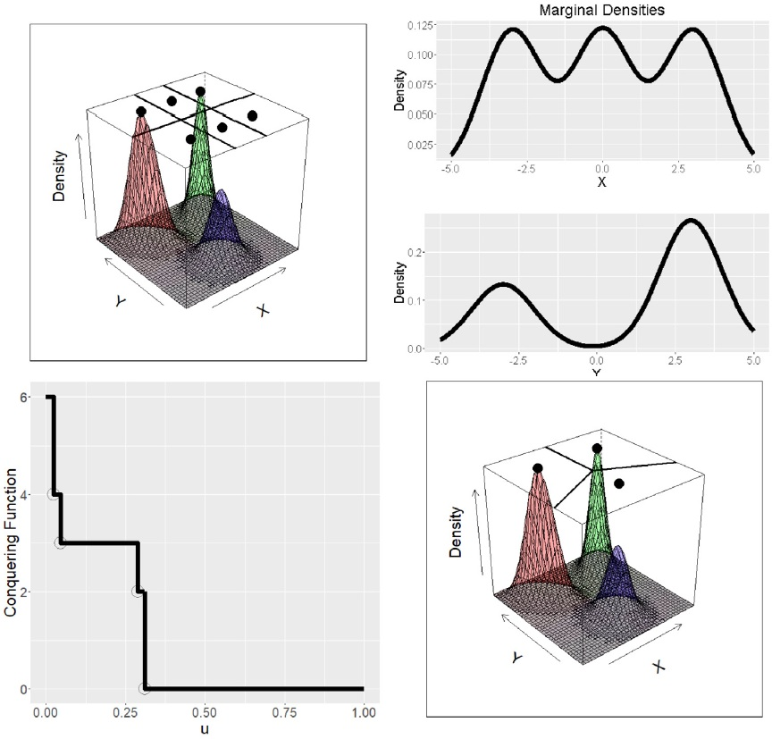
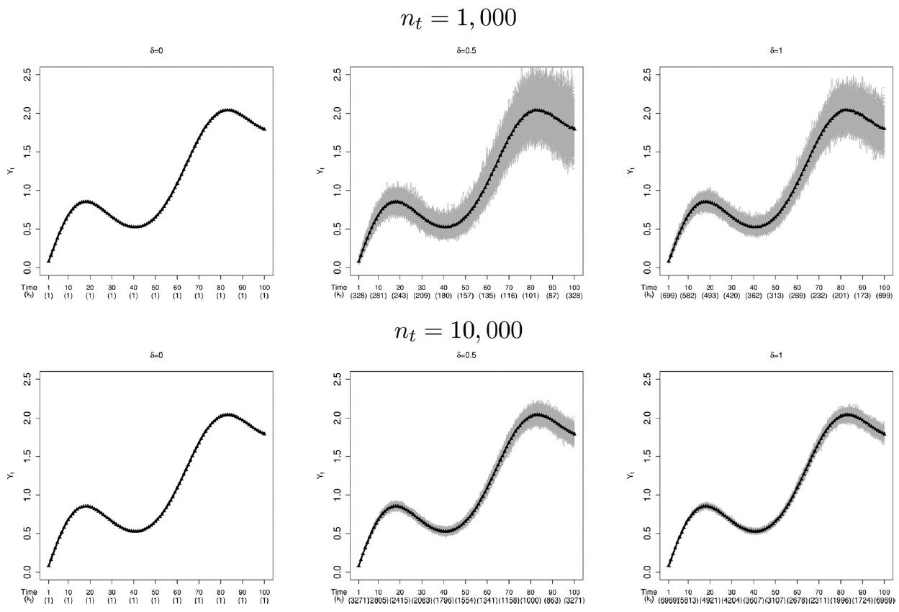
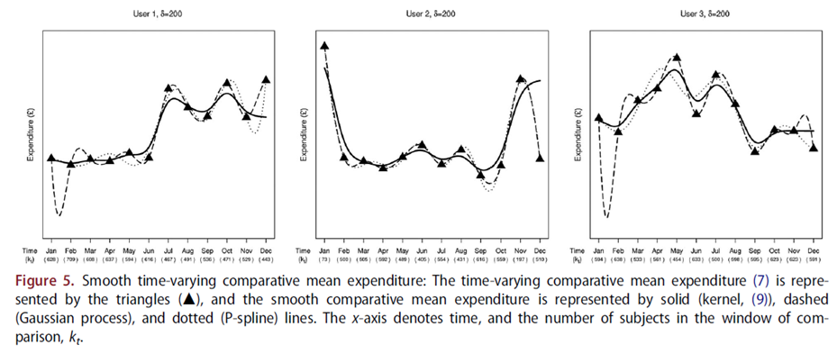

Professional Experience & Industry Collaboration
University of Edinburgh, School of Mathematics
Research Fellow in Statistical Learning & Financial AI
April 2024 – April 2026 · Edinburgh, Scotland
Developing practical statistical-learning and AI solutions in collaboration with academic, technology, and a £500 billion asset-management fund.
- Developing explainable AI and statistical-learning approaches for financial applications and investment-related use cases.
- Working in a joint initiative involving the University of Edinburgh and a £500 billion asset-management fund.
- Developing practical interfaces between statistical methods, machine learning, and large language models.
- Implementing and maintaining analytical software in Python and R.
- Translating technical work into clear results and recommendations for multidisciplinary stakeholders.
- Coordinating designated project components across research and industry teams.
Open Banking Data Science & Financial Analytics
Doctoral Researcher — University of Edinburgh
September 2017 – December 2023 · Edinburgh, Scotland
Industrial doctorate focused on developing statistical and machine-learning methods for practical analysis of Open Banking-Type transactional data.
- Developed methods for financial-data analysis, personal-finance insights, customer segmentation, and macroeconomic analysis.
- Worked in a cross-sector collaboration between the University of Edinburgh, The Data Lab, and financial-technology company Inbest.ai.
- Applied nonparametric statistics, clustering, unsupervised machine learning, and time-series methods.
- Built analytical approaches for complex and high-dimensional transaction data.
- Organised and contributed to events involving industry, government, academia, and third-sector organisations.
Previous Professional Experience
- Statistician and Assistant to Studio Director, Krämer Marktforschung — supported market-research project organisation, reporting, and operational planning.
- Student Assistant, Freie Universität Berlin — prepared German Socio-Economic Panel data for statistical analysis, regression modelling, and reporting.
- Data Mining Tutor, University of Edinburgh Business School — delivered applied R-based data-mining programming exercises at Master's level.
- Economics Tutor, Freie Universität Berlin — taught microeconomics, macroeconomics, and introductory economics tutorials.
- Internship, German–Slovak Industrial Chamber of Commerce — researched companies, supported bilateral business communication, and organised meetings.
- Internship, Via Iuris — maintained an NGO database focused on judicial, human-rights, civil-rights, and environmental issues.
Applied AI, Data Science & Selected Work
Statistical Learning, Financial AI and their Interface with Large Language Models
Developing practical approaches at the intersection of statistical learning, interpretable machine learning, financial AI, and large language models.
- Developing statistical and explainable-AI methodology for financial and investment-related applications.
- Investigating practical interfaces between statistical intelligence and large language models.
- Designing and implementing methods in Python and R.
- Supporting data-driven decision making through transparent, interpretable, and robust analytical methods.
Statistical Learning for Open Banking-Type Data
Developed new statistical learning methods for analysing transaction data, personal finance, market segmentation, and macroeconomic topics.
- Developed nonparametric methods for personal-finance analysis.
- Developed unsupervised learning methods for quantitative market segmentation.
- Worked with Open Banking-Type transactional data in collaboration with academia, public institutions, and industry.
- Applied clustering, smooth predictors for time series, and flexible statistical-learning methods.
A Game-Inspired Algorithm for Marginal and Global Clustering
de Carvalho, M., Martos, G., and Svetlošák, A. (2025). Pattern Recognition.
- Introduces a game-inspired algorithm for marginal and global clustering.
- Research with applications in unsupervised machine learning, segmentation, and data exploration.

Novel Statistical Learning Approaches for Open Banking-Type Data
Andrej Svetlošák (2024). Doctoral thesis, University of Edinburgh.
- Develops statistical learning approaches for Open Banking-Type transactional data.
- Focuses on nonparametric statistics, clustering, unsupervised learning, and quantitative market segmentation.
- Applies methods to personal-finance, microeconomic, and macroeconomic topics.
Subject-to-Group Statistical Comparison for Open Banking-Type Data
Svetlošák, A., de Carvalho, M., and Calabrese, R. (2021). Journal of the Operational Research Society.
- Presents a statistical approach for subject-to-group comparison using Open Banking-Type data.
- Applies nonparametric statistical methods to transactional financial data.
- Introduces covariate truncated regression centred at a reference point. This is used to analyse individual subject behaviour in comparison to a group of peers.


Professional and Academic Activities
Contributions to the data-science and statistical-learning community through talks, industry engagement, reviewing, seminar organisation, and event coordination.
- Invited speaker at Digital Transformation and Digital Economics: Principles and Practice (DXDE), 2024.
- Speaker at the International Federation of Classification Societies conference, 2022.
- Presenter at ERCIM Computational and Methodological Statistics conferences.
- Session chair at the University of Edinburgh Centre for Statistics Annual Conference.
- Reviewer for PLOS ONE and the Journal of Computational and Graphical Statistics.
- Co-organiser of Statistics Seminars at the University of Edinburgh.
About Me
I am a data scientist specialising in financial AI, statistical
learning, explainable AI, machine learning, and analysis of
complex financial and transactional data. I work on turning
advanced statistical and AI methods into practical tools,
systems, and insights for real-world decision making.
My experience includes industry-oriented work in asset management,
financial AI, Open Banking-Type data, market research, and applied
analytics. I am particularly interested in projects where complex
data, machine learning, and business or financial decisions meet.
I have worked closely with industry partners, government-linked
innovation organisations, and multidisciplinary teams. My work
includes methodology development, software implementation in R and
Python, analysis of complex datasets, and communicating technical
findings clearly to non-technical stakeholders.
I hold a PhD in Statistics from the University of Edinburgh.
I work primarily with R and Python and speak fluent Slovak, English,
and German.